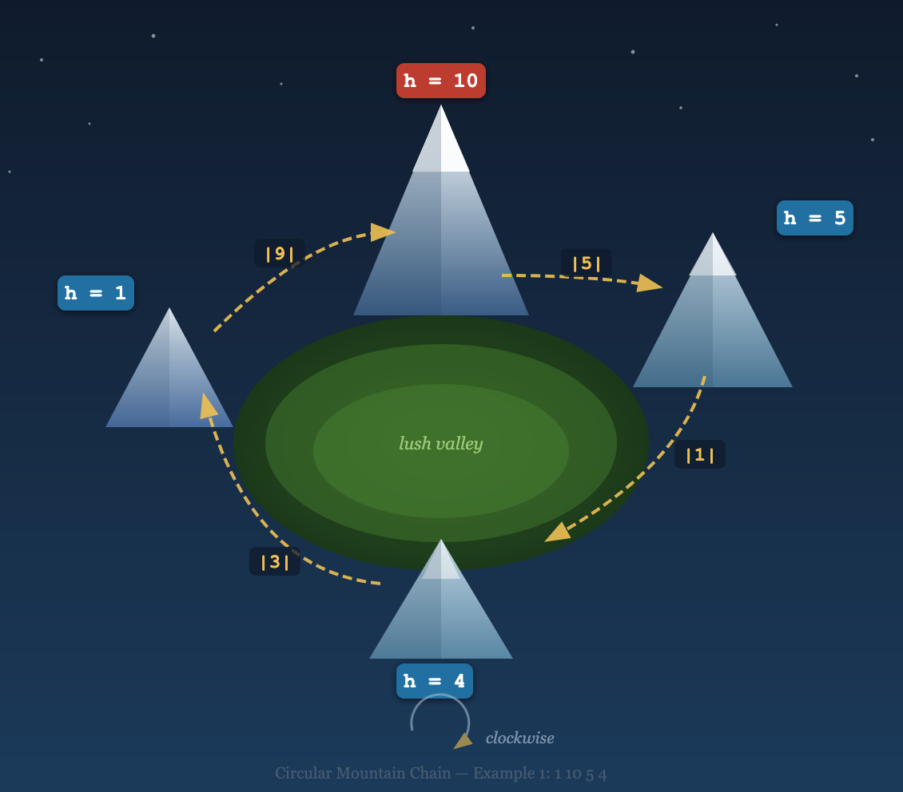

You are planning a hike in the famous Circular Mountain Chain. It has this name due to the circular nature of its mountains, that surround a lush valley.
You want to visit all the mountains in a clockwise manner, but you're afraid that it may be too tiresome. Still, you notice that if you start at one mountain and finish at another, you don't have to return to the initial mountain.
You follow the connecting trails to hike each mountain exactly once. Find the least tiresome hike.
You are given a sequence of mountain heights a, corresponding
to a clockwise order of the mountain chain.
From each mountain there is a trail to the next mountain clockwise. Naturally, since it is circular, there is a trail from the last mountain in the sequence to the first.
The cost of a trail between two contiguous mountains with heights x and y is |x - y|.
The total cost of a hike is the sum of the costs of all trails hiked.
You can start at any mountain and end at the mountain preceding it. Again naturally, because it's circular, if you start at the first mountain, you can end at the last.
Your task is to find the hike that visits all mountains with the minimum total cost and print the heights of the mountains you visit in order.
If multiple hikes have the same cost, choose the hike starting at the mountain that appears first in the sequence.
You will receive two lines as input.
In the first line, you will receive an integer n (1 <= n <= 100'000), corresponding to the number of mountains.
In the second line, you will receive n integers a_1, a_2, ..., a_n separated by spaces;
each number a_i (1 <= a_i <= 100'000) corresponds to the height of the ith mountain.
Print one line with n numbers corresponding to the hike with minimal cost.
4 1 10 5 4
10 5 4 1
Going from the mountain with height 1 to the mountain with height 10 has cost 9.
Going from the mountain with height 10 to the mountain with height 5 has cost 5.
Going from the mountain with height 5 to the mountain with height 4 has cost 1.
Going from the mountain with height 4 to the mountain with height 1 has cost 3.
There are 4 possible hikes:
1 10 5 4 - This hike has cost 9+5+1 = 15.10 5 4 1 - This hike has cost 5+1+3 = 9.5 4 1 10 - This hike has cost 1+3+9 = 13.4 1 10 5 - This hike has cost 3+9+5 = 17.
Threfore, the hike with minimum cost is 10 5 4 1.
5 352 830 867 745 830
352 830 867 745 830
Content by Fernando Silva and Vanessa Silva (DCC/FCUP), copied from the original website.